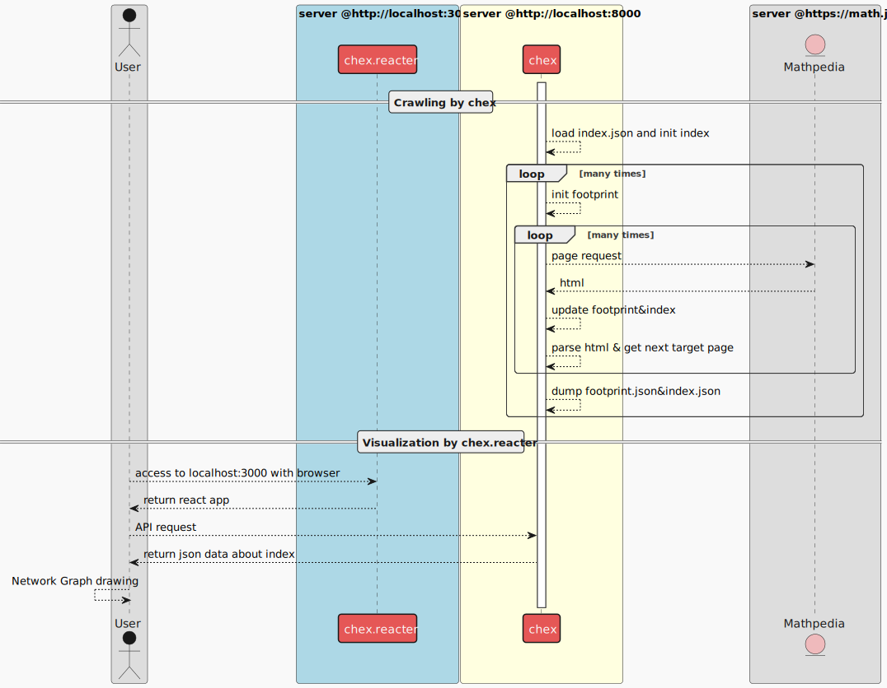

複雑なWeb文書の意味を理解するPoC#1
野口裕一郎
2024年4月19日 @NeuroDive秋葉原
自己紹介

こんな困りごとありませんか？
Case1: 過去に書かれた資料の探索に不安がある！
graph TD classDef noteclass fill:#fff5ad,stroke:#decc93,color:#000000; classDef relclass fill-opacity:.0,color:#FFFFFF,stroke-width:0px; U((社員)) --- r1["調べた"]:::relclass --> D1((過去の文書A)) U --- r2["調べた"]:::relclass --> D2((過去の文書B)) U --- r3["調べきれない。。。"]:::relclass --> Ds((その他過去の文書群)) U --- note_useraction[追加したい]:::relclass --> D3((新しい文書)) U -.- note_userthink1(本当に同じことについて記述したものはない？):::noteclass note_userthink1 -.- note_userthink2(きちんと過去の文書を網羅的に見れている？):::noteclass
Case2: 同じ製品のはずなのに、掲載サイトによって情報が異なる！
graph TD
classDef noteclass fill:#fff5ad,stroke:#decc93,color:#000000;
classDef relclass fill:transparent,color:#FFFFFF,stroke-width:0px;
A((サイトA)) --- R["情報を掲載"]:::relclass --> X((製品X))
B((サイトB)) --- S["情報を掲載"]:::relclass --> X
U((ユーザー)) --- T["閲覧"]:::relclass --> A
U --- V["閲覧"]:::relclass --> B
U -.- note_userthink1("ほんとに同じスペック？"):::noteclass
note_userthink1 -.- note_userthink2("最新のバージョンなのか？"):::noteclass
セマンティック・ウェブの実現が鍵!
セマンティック・ウェブとは?
セマンティック・ウェブ
ひとつのコンセプト
実現のための技術の標準化作業がW3Cで進んでいる。
“セマンティック・ウェブはXMLによって記述した文書にRDFやOWLを用いてタグを付け加える。” Wikipediaより
“この、データの意味を記述したタグが文書の含む意味を形式化し、コンピュータによる自動的な情報の収集や分析へのアプローチが可能となると期待されている” Wikipediaより
文書構造だけでなく、意味構造も付与しましょう！
ということ
Case1: 過去に書かれた資料の探索に不安がある！
graph TD classDef noteclass fill:#fff5ad,stroke:#decc93,color:#000000; classDef relclass fill-opacity:.0,color:#FFFFFF,stroke-width:0px; U((社員)) --- r1["調べた"]:::relclass --> D1((過去の文書A)) U --- r2["調べた"]:::relclass --> D2((過去の文書B)) U --- r3["調べきれない。。。"]:::relclass --> Ds((その他過去の文書群)) U --- note_useraction[追加したい]:::relclass --> D3((新しい文書)) U -.- note_userthink1(本当に同じことについて記述したものはない？):::noteclass note_userthink1 -.- note_userthink2(きちんと過去の文書を網羅的に見れている？):::noteclass
意味的な検索の実行
- この文脈でこの意味で使われている言葉は？
- 似たような課題を解決するために使われていたツールは？
未来への投資、だけではない。
セマンティック・ウェブの本質は、「意味」の機械可読性を向上させること。
Webの強力な情報表現能力と過去の情報資産
- 柔軟なマークアップと情報表現能力
- リンクによる文書間の関連
- 広く普及し、応用されている形式
RAGなどを導入・活用するためのデータ基盤整備戦略として重要
実現に向けての課題
セマンティック・ウェブの概念自体は2000年には提案されている
2000年代-2010年代を通じてW3Cなどにより技術標準が整備されてきた
しかし現在のWebに普及しているとは言い難い
実現に向けての課題
“既存のWebサイトに対するメタデータ付与の作業が必要であるため、Web全域への普及に関しても長期間掛かると予想されている“ Wikipediaより
普及を阻害する原因
- メタデータをつける作業のコストパフォーマンス
- 語彙やラベルの設計が難しい
Webのデータはマルチモーダルで複雑!
例えばこういうデータが意味的に理解できると嬉しい！
例１ 文書に伴った図像
茶トラ猫、耳のカット、名前、抽象的な「猫」、etc...
例２ 数式が混ざった日本語
任意の複素数値Borel測度$\nu\colon\mathcal{B}_{\mathbb{R}^N}\rightarrow [0,\infty]$と任意の$\alpha\in (0,\infty)$に対し、 \[ \lvert(\alpha\lt M\nu)\rvert\leq \frac{3^N}{\alpha}\lVert \nu\rVert \] が成り立つ。
成果物の目的
Webに蓄えられた情報資産に意味を付与する
意味を理解するための第一歩
データに含まれる実体とそのカテゴリを正しく認識すること
数学文書の固有表現認識を題材として扱う
固有表現認識とは？
テキストのソースとさせていただいたサイト
成果物デモ
実際の処理を御覧いただきたいと思います
デモ
技術要素
- クローラサーバー(バックエンド1)
- python
- 標準ライブラリ群, BeautifulSoup, NetworkX
- 固有表現認識サーバー(バックエンド2)
- python on Google Colab
- transformers, FastAPI, ngrok, label-stuido
- Reactアプリ
- React
- Adobe Spectrum, axios
まとめ
セマンティック・ウェブとAI利用のためのデータ基盤としての側面から、Webドキュメントをセマンティックに理解することが重要
そのために、文書単位での意味付けと文書間のリンク構造を反映した意味付けのアプローチがある。
力学計算によるリンク構造可視化で、意味が近い文書群は、数学概念のレベルで近しいことがわかった。
Latex記法のような、数式を記述するための特殊な記法についてもその意味を理解できることが示唆された。
ご清聴ありがとうございました。
vim & emmet, slideshow powered by reveal.js, hosted by Github Pages
参考文献
技術的補足
システム全体像のSequence Diagram
クローリングの実行コード
クローラのClass Diagram

クローリングのActivity Diagram
%%{init: {'theme': 'dark', 'themeVariables': { 'darkMode': true }}}%%
flowchart LR
A[クローラ] -- リクエスト--> B{Is it?};
B -- Yes --> C[OK];
C --> D[Rethink];
D --> B;
B -- No ----> E[End];
リンク抽出のロジックフローチャート
URL Screenのロジック
waitlistの更新ロジック
class Handler(HandlerBase):
def update_waitlist(self, new_hrefs: [Href]):
# update waitlist
for new_href in new_hrefs:
try:
href = self.inventory.get_edge(new_href.source.url, new_href.target.url)
except KeyError as e:
# edgeがないなら、targetのnodeが存在するかを確認する
try:
target = self.inventory.get_node(new_href.target.url)
except KeyError as e:
# nodeがないならwaitlistへ
self.waitlist.enque(new_href)
else:
if self.starttime > target.timestamp:
# nodeがあって、かつ最新の調査がまだならwaitlistへ
self.waitlist.enque(new_href)
else:
# 最新の調査済みであればedgeへ
new_href.target = target
self.update_inventory(new_href, update_source=False, update_target=False)
else:
# edgeがあるなら、そのedgeのターゲットの調査時刻を
# 調査開始時点との比較する
if self.starttime > href.target.timestamp:
self.waitlist.enque(href)
固有表現認識のSequence Diagram
アノテーションデータセット
| ラベル名 | train | validation | test |
|---|---|---|---|
| 識別子 | 1141 | 115 | 120 |
| 概念名 | 429 | 21 | 42 |
| 関係子 | 310 | 30 | 48 |
| 演算子 | 240 | 80 | 22 |
| リテラル/定数 | 99 | 34 | 9 |
| 合計 | 2219 | 280 | 241 |
アノテーション例
ファインチューニング
# 乱数シードを42に固定する
set_seed(42)
# モデルを読み込む
model_name = "cl-tohoku/bert-base-japanese-v3"
tokenizer = AutoTokenizer.from_pretrained(model_name)
model = AutoModelForTokenClassification.from_pretrained(
model_name,
label2id = label2id,
id2label = id2label,
)
# collate関数にDataCollatorForTokenClassificationを用いる
data_collator = DataCollatorForTokenClassification(tokenizer)
training_args = TrainingArguments(
output_dir="output_bert_ner", # 結果の保存フォルダ
per_device_train_batch_size=32, # 訓練時のバッチサイズ
per_device_eval_batch_size=32, # 評価時のバッチサイズ
learning_rate=1e-4, # 学習率
lr_scheduler_type="linear", # 学習率スケジューラ
warmup_ratio=0.1, # 学習率のウォームアップ
num_train_epochs=20, # 訓練エポック数
evaluation_strategy="epoch", # 評価タイミング
save_strategy="epoch", # チェックポイントの保存タイミング
logging_strategy="epoch", # ロギングのタイミング
fp16=True, # 自動混合精度演算の有効化
)
# Trainerを初期化する
trainer = Trainer(
model=model,
tokenizer=tokenizer,
train_dataset=train_dataset,
eval_dataset=validation_dataset,
data_collator=data_collator,
args=training_args,
)
# 訓練する
trainer.train()
テスト結果
| ラベル名 | precision | recall | f1-score | support |
| リテラル/定数 | 0.89 | 0.89 | 0.89 | 9 |
| 概念名 | 0.93 | 0.88 | 0.90 | 42 |
| 演算子 | 0.91 | 0.95 | 0.93 | 22 |
| 識別子 | 0.74 | 0.82 | 0.78 | 120 |
| 関係子 | 0.90 | 0.94 | 0.92 | 48 |
処理結果の例（良い例）
事例1の正解: $ [(識別子) G] $を [(概念名) 局所コンパクト群] とする。任意の$ [(識別子) x] [(関係子) \in] [(識別子) G] $に対し [(概念名) Borel測度] $$ [(識別子) \delta_x] \colon [(識別子) \mathcal{B}_G] [(関係子) \ni] [(識別子) B] [(演算子) \mapsto] [(識別子) \chi_B] ( [(識別子) x] ) [(関係子) \in] [(リテラル/定数) [0,1]] $$を$ [(識別子) x] $における [(概念名) Dirac測度] と言う。
事例1の予測: $ [(識別子) G] $を [(概念名) 局所コンパクト群] とする。任意の$ [(識別子) x] [(関係子) \in] [(識別子) G] $に対し [(概念名) Borel測度] $$ [(識別子) \delta_x] \colon [(識別子) \mathcal{B}_G] [(関係子) \ni] [(識別子) B] [(演算子) \mapsto] [(識別子) \chi_B] ( [(識別子) x] ) [(関係子) \in] [(リテラル/定数) [0,1]] $$を$ [(識別子) x] $における [(概念名) Dirac測度] と言う。
処理結果の例（悪い例）
事例3の正解: $ [(識別子) T] [(関係子) \subsetneq] [(識別子) \pOm] $を [(概念名) 相対開集合] とする。$ [(識別子) k] [(関係子) \in] [(識別子) \Zz] $、$ [(識別子) \alpha] [(関係子) \in] [(リテラル/定数) [0,1]] $、$ [(識別子) \sigma] [(関係子) \in] [(識別子) \R] $について$$ [(識別子) C^{k,\alpha}_{(\sigma)}] ( [(識別子) \OmT] ) [(関係子) \colon=] \{ [(識別子) u] [(関係子) \in] [(識別子) C^{k,\alpha}] ( [(識別子) \OmT] )\colon [(識別子) |u|^{(\sigma)}_{k,\alpha;\OmT}] \lt [(リテラル/定数) \infty] \}$$とすると$C^{k,\alpha}_{(\sigma)}(\OmT)$はノルム$|\cdot|^{(\sigma)}_{k,\alpha;\OmT}$について完備である。
事例3の予測: $ [(識別子) T] [(関係子) \subsetneq] [(識別子) \pOm] $を [(概念名) 相対開集合] とする。$ [(識別子) k] [(関係子) \in] [(識別子) \Zz] $、$ [(識別子) \alpha] [(関係子) \in] [(リテラル/定数) [0,1]] $、$ [(識別子) \sigma] [(関係子) \in] [(識別子) \] [(識別子) R] $について$$ [(識別子) C^{k,\alpha}_{(\sigma)}] ( [(識別子) \OmT] ) [(関係子) \colon=] \{ [(識別子) u] [(関係子) \in] [(識別子) C^{k,\alpha}] ( [(識別子) \OmT] ) [(関係子) \colon] | [(識別子) u|^{(\sigma)}] [(識別子) _{k,\alpha;] [(識別子) \OmT}] [(関係子) \lt] [(リテラル/定数) \infty] \}$$とすると$ [(識別子) C^{k,\alpha}_{(\sigma)}] ( [(識別子) \OmT] )$は [(概念名) ノルム] $|\ [(識別子) c] d [(識別子) ot|^{] ( [(識別子) \sigma] )}_{ [(識別子) k,\alpha;] [(識別子) \OmT}] $について [(概念名) 完備] である。